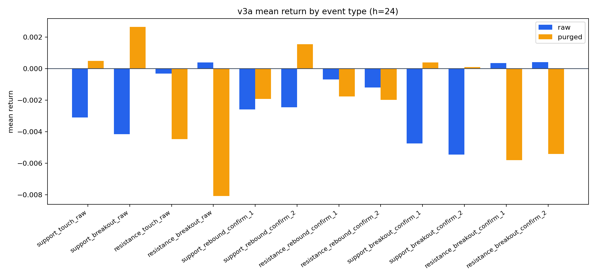
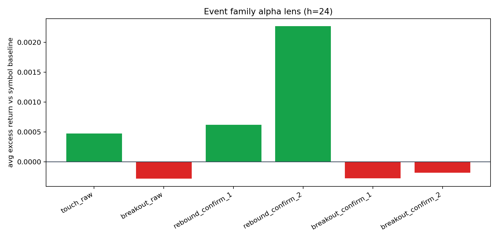

核心目标：研究“当时已可见 line 上的事件”是否能预测未来收益，同时尽量避免未来函数。
v3a 边界：首版采用 stepwise visible snapshots（每 24 根 bar 重算一次可见线）以平衡计算量；后续可升级为更细粒度 as-of 引擎。
一句人话总结：这轮 120d 长样本里，breakout short 还没死，但已经比短样本看上去弱了很多；rebound long 也还没有站稳成可直接 headline 的多头 alpha。
如果完全不挑事件，只在同一时期随机拿 action time 看未来收益，市场本来是什么样。事件只有明显优于/劣于这个基线，才更像 alpha。
| symbol | horizon | baseline_mean | baseline_median | baseline_up_ratio | eligible |
|---|---|---|---|---|---|
| BTC-USD | 24 | -0.001958 | -0.001164 | 0.474095 | 2818 |
| ETH-USD | 24 | -0.002605 | -0.000255 | 0.495387 | 2818 |
| SOL-USD | 24 | -0.002889 | -0.001790 | 0.476410 | 2819 |
| BNB-USD | 24 | -0.002446 | -0.000097 | 0.497694 | 2819 |
这张表把绝对收益、相对基线 excess、跨资产一致性合在一起看，帮助判断哪些事件更值得进入 baseline 池。
| candidate | lens | status | why | events | h24_mean_ret | h24_avg_excess_ret | symbol_consistency |
|---|---|---|---|---|---|---|---|
| confirmed breakout family (2-bar confirm) | short / continuation | keep | 24h 下绝对收益最差，且相对同周期无条件基线也更差。 | 265 | -0.002664 | -0.000180 | 3/4 negative-excess |
| support breakout confirm_2 | short candidate | keep | 24h 绝对收益和相对基线都显著偏负；和 breakout family 结论一致。 | 132 | 0.000105 | 0.002653 | 1/4 negative-excess |
| support rebound confirm_1 | best long candidate so far | watch | 当前更像多头观察候选：相对基线略强，但绝对收益还不够强，样本也不大。 | 140 | -0.001920 | 0.000555 | 1/4 positive-excess |
| rebound family (1-bar confirm) | relative long / mean reversion | watch | 相对基线有正 excess，但绝对收益并不强，说明更像抗跌而不是强上涨。 | 281 | -0.001841 | 0.000620 | 1/4 positive-excess |
重要 caveat：当前 breakout 的 support / resistance 两侧结果不能直接当成独立 alpha 结论。A 类审计已经说明：breakout side 的几何 / 归属还没完全 clean，所以更稳的解释仍应先落在 breakout family 层面。对应审计见：breakout side audit；对其中“100% inversion”指标的纠偏复核见：breakout metric re-audit。
这张小结只读当前 v3 主页面的 120d / 4-asset / h=24 artifacts，再结合 A 类审计，回答“现在能不能把两边当成不同信号”。
| family | support_events | resistance_events | support_h24_avg_excess_ret | resistance_h24_avg_excess_ret | support_minus_resistance | reading | reliability |
|---|---|---|---|---|---|---|---|
| breakout_raw | 140 | 140 | 0.005027 | -0.005612 | 0.010639 | 数字上 support 更弱 / 更偏空；但 breakout side 审计还没 clean，先只按 family-level 看。 | breakout 数字差异: low_to_medium；不宜独立解读: high |
| breakout_confirm_1 | 137 | 136 | 0.002840 | -0.003297 | 0.006137 | 数字上 support 更弱 / 更偏空；但 breakout side 审计还没 clean，先只按 family-level 看。 | breakout 数字差异: low_to_medium；不宜独立解读: high |
| breakout_confirm_2 | 132 | 133 | 0.002653 | -0.002998 | 0.005651 | 数字上 support 更弱 / 更偏空；但 breakout side 审计还没 clean，先只按 family-level 看。 | breakout 数字差异: low_to_medium；不宜独立解读: high |
| rebound_confirm_1 | 140 | 141 | 0.000555 | 0.000697 | -0.000143 | 当前是 resistance 略强，但这还不等于已经形成稳定单边优势。 | medium |
| rebound_confirm_2 | 139 | 138 | 0.004042 | 0.000535 | 0.003507 | 当前是 support 略强，但差距还不够稳定到能宣布单边胜出。 | medium |
confirm_1，support 相对基线略强；但到 confirm_2，反而是 resistance 略强。所以现在更诚实的说法是“rebound 对 side 有点敏感”，还不是“哪一边已经稳赢”。confirm_1 和 confirm_2 都稳定胜出的单边。最短答案：旧版采样器把“已经站到错误一侧的线”也继续当成 breakout 候选，而且 breakout 更像“当前处在突破状态”而不是“这一根 bar 才刚发生穿越”。这样一来，同一根 bar 就可能被同时记成 support breakout 和 resistance breakout。
| sample | family | exact_mirrored_pairs | support_above_resistance_share |
|---|---|---|---|
| raw | breakout_raw | 0 | |
| raw | breakout_confirm_1 | 0 | |
| raw | breakout_confirm_2 | 0 | |
| purged | breakout_raw | 0 | |
| purged | breakout_confirm_1 | 0 | |
| purged | breakout_confirm_2 | 0 |
symbol + event/confirm/action timestamps，确实可能同时留下 support breakout 与 resistance breakout 两条记录。这是给读者的 plain-language 摘要：只基于当前 v3 主报告（120d、4 个资产、主观察窗 h=24）的结果，不把后续 OOS 扩展或更长样本的判断提前混进来。
confirmed breakout family 仍是当前最像的负向主候选。按当前主页口径，breakout_confirm_2 在 h=24 的 family-level 平均收益约 -0.27%，相对同段基线的平均 excess 约 -0.02%。翻成人话：它更像“后面 24 小时继续走弱”的候选，而不是反转做多信号。可靠度：medium。support_rebound_confirm_1 仍可先留在多头观察名单里，但级别只能算 weak watch。它的 h=24 相对基线 excess 约 0.06%，绝对平均收益约 -0.19%。翻成人话：这不是“已经找到 long alpha”，而是“在 rebound 线里暂时还没被完全排除”的候选。可靠度：low_to_medium。support breakout 和 resistance breakout 已经是两条可分开交易的独立 alpha。A 类审计仍提示：breakout 的 side 几何 / 归属问题需要继续严审，所以当前最稳的解读单位仍是 family，不是单边标签。可靠度：high。
先看 raw 与 purged 的差别，确认结果不是仅靠重叠事件堆出来的。

这张图更接近 alpha 视角：正值代表“比无条件基线更强”，负值代表“比基线更弱”。
| event_family | horizon | events | mean_ret | median_ret | up_ratio | baseline_mean_avg | avg_excess_ret | pos_symbols_excess | neg_symbols_excess | zero_symbols_excess | consistency |
|---|---|---|---|---|---|---|---|---|---|---|---|
| touch_raw | 6 | 287 | -0.000959 | -0.000493 | 0.477352 | -0.000650 | -0.000307 | 2 | 2 | 0 | 0.50 |
| touch_raw | 24 | 287 | -0.002004 | 0.000223 | 0.508711 | -0.002475 | 0.000478 | 3 | 1 | 0 | 0.75 |
| touch_raw | 48 | 287 | -0.002533 | -0.002947 | 0.470383 | -0.005074 | 0.002543 | 3 | 1 | 0 | 0.75 |
| touch_raw | 72 | 287 | -0.005676 | -0.007213 | 0.442509 | -0.007652 | 0.001964 | 4 | 0 | 0 | 1.00 |
| breakout_raw | 6 | 280 | -0.001963 | -0.000314 | 0.496429 | -0.000650 | -0.001339 | 2 | 2 | 0 | 0.50 |
| breakout_raw | 24 | 280 | -0.002719 | -0.001292 | 0.471429 | -0.002475 | -0.000281 | 3 | 1 | 0 | 0.75 |
| breakout_raw | 48 | 280 | -0.002013 | -0.001900 | 0.471429 | -0.005074 | 0.003039 | 3 | 1 | 0 | 0.75 |
| breakout_raw | 72 | 280 | -0.006191 | -0.001473 | 0.492857 | -0.007652 | 0.001426 | 3 | 1 | 0 | 0.75 |
| rebound_confirm_1 | 6 | 281 | -0.001688 | 0.000666 | 0.533808 | -0.000650 | -0.001043 | 1 | 3 | 0 | 0.75 |
| rebound_confirm_1 | 24 | 281 | -0.001841 | -0.000177 | 0.491103 | -0.002475 | 0.000620 | 1 | 3 | 0 | 0.75 |
| rebound_confirm_1 | 48 | 281 | -0.001817 | -0.002488 | 0.473310 | -0.005074 | 0.003264 | 3 | 1 | 0 | 0.75 |
| rebound_confirm_1 | 72 | 281 | -0.007345 | -0.002881 | 0.480427 | -0.007652 | 0.000289 | 2 | 2 | 0 | 0.50 |
| rebound_confirm_2 | 6 | 277 | -0.001735 | -0.000135 | 0.494585 | -0.000650 | -0.001090 | 0 | 4 | 0 | 1.00 |
| rebound_confirm_2 | 24 | 277 | -0.000207 | 0.002379 | 0.552347 | -0.002475 | 0.002271 | 4 | 0 | 0 | 1.00 |
| rebound_confirm_2 | 48 | 277 | -0.002692 | -0.004065 | 0.458484 | -0.005074 | 0.002375 | 3 | 1 | 0 | 0.75 |
| rebound_confirm_2 | 72 | 277 | -0.007774 | -0.007021 | 0.458484 | -0.007652 | -0.000157 | 2 | 2 | 0 | 0.50 |
| breakout_confirm_1 | 6 | 273 | -0.001597 | -0.001139 | 0.450549 | -0.000650 | -0.000965 | 2 | 2 | 0 | 0.50 |
| breakout_confirm_1 | 24 | 273 | -0.002695 | 0.000299 | 0.505495 | -0.002475 | -0.000272 | 1 | 3 | 0 | 0.75 |
| breakout_confirm_1 | 48 | 273 | -0.001256 | -0.001281 | 0.483516 | -0.005074 | 0.003812 | 4 | 0 | 0 | 1.00 |
| breakout_confirm_1 | 72 | 273 | -0.005923 | -0.000265 | 0.498168 | -0.007652 | 0.001699 | 3 | 1 | 0 | 0.75 |
| breakout_confirm_2 | 6 | 265 | -0.002413 | -0.000216 | 0.494340 | -0.000650 | -0.001785 | 0 | 4 | 0 | 1.00 |
| breakout_confirm_2 | 24 | 265 | -0.002664 | -0.001073 | 0.483019 | -0.002475 | -0.000180 | 1 | 3 | 0 | 0.75 |
| breakout_confirm_2 | 48 | 265 | -0.002249 | -0.001580 | 0.479245 | -0.005074 | 0.002824 | 4 | 0 | 0 | 1.00 |
| breakout_confirm_2 | 72 | 265 | -0.005827 | -0.003304 | 0.490566 | -0.007652 | 0.001780 | 3 | 1 | 0 | 0.75 |
| event_type | horizon | events | mean_ret | median_ret | up_ratio | baseline_mean_avg | avg_excess_ret | pos_symbols_excess | neg_symbols_excess | zero_symbols_excess | consistency |
|---|---|---|---|---|---|---|---|---|---|---|---|
| support_touch_raw | 6 | 143 | 0.000507 | -0.000493 | 0.475524 | -0.000650 | 0.001188 | 1 | 3 | 0 | 0.75 |
| support_touch_raw | 24 | 143 | 0.000484 | 0.000276 | 0.510490 | -0.002475 | 0.002977 | 4 | 0 | 0 | 1.00 |
| support_touch_raw | 48 | 143 | 0.000471 | -0.003299 | 0.461538 | -0.005074 | 0.005592 | 4 | 0 | 0 | 1.00 |
| support_touch_raw | 72 | 143 | -0.004924 | -0.005903 | 0.454545 | -0.007652 | 0.002712 | 4 | 0 | 0 | 1.00 |
| support_breakout_raw | 6 | 140 | -0.000745 | 0.000176 | 0.521429 | -0.000650 | -0.000155 | 2 | 2 | 0 | 0.50 |
| support_breakout_raw | 24 | 140 | 0.002649 | 0.000705 | 0.514286 | -0.002475 | 0.005027 | 3 | 1 | 0 | 0.75 |
| support_breakout_raw | 48 | 140 | 0.000033 | 0.000372 | 0.514286 | -0.005074 | 0.005016 | 3 | 1 | 0 | 0.75 |
| support_breakout_raw | 72 | 140 | -0.005397 | -0.000317 | 0.500000 | -0.007652 | 0.002160 | 3 | 1 | 0 | 0.75 |
| resistance_touch_raw | 6 | 144 | -0.002415 | -0.000461 | 0.479167 | -0.000650 | -0.001765 | 1 | 3 | 0 | 0.75 |
| resistance_touch_raw | 24 | 144 | -0.004474 | 0.000054 | 0.506944 | -0.002475 | -0.001999 | 1 | 3 | 0 | 0.75 |
| resistance_touch_raw | 48 | 144 | -0.005517 | -0.002914 | 0.479167 | -0.005074 | -0.000443 | 2 | 2 | 0 | 0.50 |
| resistance_touch_raw | 72 | 144 | -0.006423 | -0.008821 | 0.430556 | -0.007652 | 0.001228 | 3 | 1 | 0 | 0.75 |
| resistance_breakout_raw | 6 | 140 | -0.003181 | -0.001948 | 0.471429 | -0.000650 | -0.002531 | 0 | 4 | 0 | 1.00 |
| resistance_breakout_raw | 24 | 140 | -0.008086 | -0.002954 | 0.428571 | -0.002475 | -0.005612 | 0 | 4 | 0 | 1.00 |
| resistance_breakout_raw | 48 | 140 | -0.004059 | -0.006413 | 0.428571 | -0.005074 | 0.001015 | 2 | 2 | 0 | 0.50 |
| resistance_breakout_raw | 72 | 140 | -0.006986 | -0.008888 | 0.485714 | -0.007652 | 0.000666 | 3 | 1 | 0 | 0.75 |
| support_rebound_confirm_1 | 6 | 140 | -0.002352 | -0.001070 | 0.492857 | -0.000650 | -0.001701 | 1 | 3 | 0 | 0.75 |
| support_rebound_confirm_1 | 24 | 140 | -0.001920 | 0.001002 | 0.528571 | -0.002475 | 0.000555 | 1 | 3 | 0 | 0.75 |
| support_rebound_confirm_1 | 48 | 140 | -0.003029 | -0.002716 | 0.457143 | -0.005074 | 0.002045 | 2 | 2 | 0 | 0.50 |
| support_rebound_confirm_1 | 72 | 140 | -0.009018 | -0.004236 | 0.471429 | -0.007652 | -0.001366 | 2 | 2 | 0 | 0.50 |
| support_rebound_confirm_2 | 6 | 139 | -0.003172 | -0.000383 | 0.482014 | -0.000650 | -0.002522 | 0 | 4 | 0 | 1.00 |
| support_rebound_confirm_2 | 24 | 139 | 0.001551 | 0.004655 | 0.589928 | -0.002475 | 0.004042 | 4 | 0 | 0 | 1.00 |
| support_rebound_confirm_2 | 48 | 139 | -0.002792 | -0.001550 | 0.489209 | -0.005074 | 0.002286 | 4 | 0 | 0 | 1.00 |
| support_rebound_confirm_2 | 72 | 139 | -0.008111 | -0.008683 | 0.424460 | -0.007652 | -0.000442 | 2 | 2 | 0 | 0.50 |
| resistance_rebound_confirm_1 | 6 | 141 | -0.001029 | 0.000967 | 0.574468 | -0.000650 | -0.000420 | 2 | 2 | 0 | 0.50 |
| resistance_rebound_confirm_1 | 24 | 141 | -0.001763 | -0.001001 | 0.453901 | -0.002475 | 0.000697 | 3 | 1 | 0 | 0.75 |
| resistance_rebound_confirm_1 | 48 | 141 | -0.000614 | -0.001514 | 0.489362 | -0.005074 | 0.004421 | 3 | 1 | 0 | 0.75 |
| resistance_rebound_confirm_1 | 72 | 141 | -0.005684 | -0.001968 | 0.489362 | -0.007652 | 0.001941 | 4 | 0 | 0 | 1.00 |
| resistance_rebound_confirm_2 | 6 | 138 | -0.000288 | 0.000280 | 0.507246 | -0.000650 | 0.000381 | 3 | 1 | 0 | 0.75 |
| resistance_rebound_confirm_2 | 24 | 138 | -0.001978 | 0.000389 | 0.514493 | -0.002475 | 0.000535 | 2 | 2 | 0 | 0.50 |
| resistance_rebound_confirm_2 | 48 | 138 | -0.002591 | -0.004963 | 0.427536 | -0.005074 | 0.002456 | 3 | 1 | 0 | 0.75 |
| resistance_rebound_confirm_2 | 72 | 138 | -0.007435 | -0.003164 | 0.492754 | -0.007652 | 0.000155 | 2 | 2 | 0 | 0.50 |
| support_breakout_confirm_1 | 6 | 137 | 0.000370 | -0.000174 | 0.481752 | -0.000650 | 0.001012 | 3 | 1 | 0 | 0.75 |
| support_breakout_confirm_1 | 24 | 137 | 0.000399 | 0.002267 | 0.540146 | -0.002475 | 0.002840 | 3 | 1 | 0 | 0.75 |
| support_breakout_confirm_1 | 48 | 137 | -0.000130 | 0.003139 | 0.518248 | -0.005074 | 0.004934 | 4 | 0 | 0 | 1.00 |
| support_breakout_confirm_1 | 72 | 137 | -0.006374 | 0.000643 | 0.503650 | -0.007652 | 0.001172 | 2 | 2 | 0 | 0.50 |
| support_breakout_confirm_2 | 6 | 132 | -0.000930 | 0.001253 | 0.560606 | -0.000650 | -0.000270 | 1 | 3 | 0 | 0.75 |
| support_breakout_confirm_2 | 24 | 132 | 0.000105 | 0.001504 | 0.537879 | -0.002475 | 0.002653 | 3 | 1 | 0 | 0.75 |
| support_breakout_confirm_2 | 48 | 132 | -0.001546 | -0.001027 | 0.492424 | -0.005074 | 0.003459 | 3 | 1 | 0 | 0.75 |
| support_breakout_confirm_2 | 72 | 132 | -0.007883 | -0.006551 | 0.462121 | -0.007652 | -0.000303 | 2 | 2 | 0 | 0.50 |
| resistance_breakout_confirm_1 | 6 | 136 | -0.003578 | -0.001624 | 0.419118 | -0.000650 | -0.002921 | 0 | 4 | 0 | 1.00 |
| resistance_breakout_confirm_1 | 24 | 136 | -0.005811 | -0.001919 | 0.470588 | -0.002475 | -0.003297 | 1 | 3 | 0 | 0.75 |
| resistance_breakout_confirm_1 | 48 | 136 | -0.002390 | -0.002940 | 0.448529 | -0.005074 | 0.002731 | 3 | 1 | 0 | 0.75 |
| resistance_breakout_confirm_1 | 72 | 136 | -0.005469 | -0.000781 | 0.492647 | -0.007652 | 0.002234 | 3 | 1 | 0 | 0.75 |
| resistance_breakout_confirm_2 | 6 | 133 | -0.003885 | -0.002167 | 0.428571 | -0.000650 | -0.003283 | 1 | 3 | 0 | 0.75 |
| resistance_breakout_confirm_2 | 24 | 133 | -0.005413 | -0.003161 | 0.428571 | -0.002475 | -0.002998 | 1 | 3 | 0 | 0.75 |
| resistance_breakout_confirm_2 | 48 | 133 | -0.002946 | -0.001966 | 0.466165 | -0.005074 | 0.002203 | 2 | 2 | 0 | 0.50 |
| resistance_breakout_confirm_2 | 72 | 133 | -0.003786 | 0.000366 | 0.518797 | -0.007652 | 0.003859 | 4 | 0 | 0 | 1.00 |
| event_type | events | mean_ret | median_ret | up_ratio | horizon | confidence_tier | direction_label |
|---|---|---|---|---|---|---|---|
| support_touch_raw | 5279 | -0.000671 | 0.000038 | 0.501610 | 6 | high | mixed |
| support_touch_raw | 5279 | -0.003099 | -0.001967 | 0.463535 | 24 | high | mixed |
| support_touch_raw | 5279 | -0.006462 | -0.003542 | 0.455768 | 48 | high | mixed |
| support_touch_raw | 5279 | -0.007488 | -0.001222 | 0.488161 | 72 | high | mixed |
| support_breakout_raw | 2674 | -0.001129 | 0.000141 | 0.507105 | 6 | high | mixed |
| support_breakout_raw | 2674 | -0.004158 | -0.002646 | 0.454749 | 24 | high | mixed |
| support_breakout_raw | 2674 | -0.007018 | -0.004426 | 0.452506 | 48 | high | mixed |
| support_breakout_raw | 2674 | -0.007516 | -0.001610 | 0.488033 | 72 | high | mixed |
| resistance_touch_raw | 5745 | -0.000329 | 0.000072 | 0.503394 | 6 | high | mixed |
| resistance_touch_raw | 5745 | -0.000314 | 0.001054 | 0.523760 | 24 | high | mixed |
| resistance_touch_raw | 5745 | -0.001853 | 0.000993 | 0.512446 | 48 | high | mixed |
| resistance_touch_raw | 5745 | -0.003982 | 0.001676 | 0.518364 | 72 | high | mixed |
| resistance_breakout_raw | 2945 | -0.000146 | -0.000425 | 0.483192 | 6 | high | mixed |
| resistance_breakout_raw | 2945 | 0.000384 | 0.001034 | 0.521222 | 24 | high | mixed |
| resistance_breakout_raw | 2945 | -0.001258 | 0.001194 | 0.515110 | 48 | high | mixed |
| resistance_breakout_raw | 2945 | -0.005357 | 0.001175 | 0.514431 | 72 | high | mixed |
| support_rebound_confirm_1 | 3535 | -0.000738 | -0.000207 | 0.489958 | 6 | high | mixed |
| support_rebound_confirm_1 | 3535 | -0.002591 | -0.001532 | 0.472136 | 24 | high | mixed |
| support_rebound_confirm_1 | 3535 | -0.005441 | -0.001993 | 0.471570 | 48 | high | mixed |
| support_rebound_confirm_1 | 3535 | -0.006771 | -0.000491 | 0.493918 | 72 | high | mixed |
| support_rebound_confirm_2 | 2861 | -0.000618 | -0.000169 | 0.492835 | 6 | high | mixed |
| support_rebound_confirm_2 | 2861 | -0.002454 | -0.001587 | 0.471164 | 24 | high | mixed |
| support_rebound_confirm_2 | 2861 | -0.005442 | -0.002347 | 0.469766 | 48 | high | mixed |
| support_rebound_confirm_2 | 2861 | -0.006996 | -0.000785 | 0.492485 | 72 | high | mixed |
| resistance_rebound_confirm_1 | 3695 | -0.000578 | 0.000084 | 0.505007 | 6 | high | mixed |
| resistance_rebound_confirm_1 | 3695 | -0.000693 | 0.001034 | 0.523681 | 24 | high | mixed |
| resistance_rebound_confirm_1 | 3695 | -0.002274 | 0.000535 | 0.507984 | 48 | high | mixed |
| resistance_rebound_confirm_1 | 3695 | -0.004142 | 0.001564 | 0.517456 | 72 | high | mixed |
| resistance_rebound_confirm_2 | 2945 | -0.000601 | 0.000239 | 0.511036 | 6 | high | mixed |
| resistance_rebound_confirm_2 | 2945 | -0.001193 | 0.001001 | 0.522241 | 24 | high | mixed |
| resistance_rebound_confirm_2 | 2945 | -0.003126 | 0.000062 | 0.501188 | 48 | high | mixed |
| resistance_rebound_confirm_2 | 2945 | -0.004668 | 0.000739 | 0.511715 | 72 | high | mixed |
| support_breakout_confirm_1 | 2023 | -0.000952 | 0.000118 | 0.503707 | 6 | high | mixed |
| support_breakout_confirm_1 | 2023 | -0.004745 | -0.003956 | 0.438458 | 24 | high | more_likely_down |
| support_breakout_confirm_1 | 2023 | -0.006939 | -0.004765 | 0.450816 | 48 | high | mixed |
| support_breakout_confirm_1 | 2023 | -0.008279 | -0.003281 | 0.474543 | 72 | high | mixed |
| support_breakout_confirm_2 | 1714 | -0.001101 | 0.000212 | 0.510502 | 6 | high | mixed |
| support_breakout_confirm_2 | 1714 | -0.005463 | -0.003529 | 0.438156 | 24 | high | more_likely_down |
| support_breakout_confirm_2 | 1714 | -0.006796 | -0.005031 | 0.444574 | 48 | high | more_likely_down |
| support_breakout_confirm_2 | 1714 | -0.007694 | -0.002853 | 0.473746 | 72 | high | mixed |
| resistance_breakout_confirm_1 | 2215 | -0.000229 | -0.000333 | 0.486230 | 6 | high | mixed |
| resistance_breakout_confirm_1 | 2215 | 0.000353 | 0.001065 | 0.525056 | 24 | high | mixed |
| resistance_breakout_confirm_1 | 2215 | -0.001201 | 0.001352 | 0.518736 | 48 | high | mixed |
| resistance_breakout_confirm_1 | 2215 | -0.005529 | 0.000557 | 0.506546 | 72 | high | mixed |
| resistance_breakout_confirm_2 | 1908 | -0.000251 | -0.000414 | 0.480084 | 6 | high | mixed |
| resistance_breakout_confirm_2 | 1908 | 0.000422 | 0.001071 | 0.523585 | 24 | high | mixed |
| resistance_breakout_confirm_2 | 1908 | -0.001120 | 0.001541 | 0.513627 | 48 | high | mixed |
| resistance_breakout_confirm_2 | 1908 | -0.005990 | 0.000510 | 0.508910 | 72 | high | mixed |
| event_type | events | mean_ret | median_ret | up_ratio | horizon | confidence_tier | direction_label |
|---|---|---|---|---|---|---|---|
| support_touch_raw | 143 | 0.000507 | -0.000493 | 0.475524 | 6 | medium | mixed |
| support_touch_raw | 143 | 0.000484 | 0.000276 | 0.510490 | 24 | medium | mixed |
| support_touch_raw | 143 | 0.000471 | -0.003299 | 0.461538 | 48 | medium | mixed |
| support_touch_raw | 143 | -0.004924 | -0.005903 | 0.454545 | 72 | medium | mixed |
| support_breakout_raw | 140 | -0.000745 | 0.000176 | 0.521429 | 6 | medium | mixed |
| support_breakout_raw | 140 | 0.002649 | 0.000705 | 0.514286 | 24 | medium | mixed |
| support_breakout_raw | 140 | 0.000033 | 0.000372 | 0.514286 | 48 | medium | mixed |
| support_breakout_raw | 140 | -0.005397 | -0.000317 | 0.500000 | 72 | medium | mixed |
| resistance_touch_raw | 144 | -0.002415 | -0.000461 | 0.479167 | 6 | medium | mixed |
| resistance_touch_raw | 144 | -0.004474 | 0.000054 | 0.506944 | 24 | medium | mixed |
| resistance_touch_raw | 144 | -0.005517 | -0.002914 | 0.479167 | 48 | medium | mixed |
| resistance_touch_raw | 144 | -0.006423 | -0.008821 | 0.430556 | 72 | medium | more_likely_down |
| resistance_breakout_raw | 140 | -0.003181 | -0.001948 | 0.471429 | 6 | medium | mixed |
| resistance_breakout_raw | 140 | -0.008086 | -0.002954 | 0.428571 | 24 | medium | more_likely_down |
| resistance_breakout_raw | 140 | -0.004059 | -0.006413 | 0.428571 | 48 | medium | more_likely_down |
| resistance_breakout_raw | 140 | -0.006986 | -0.008888 | 0.485714 | 72 | medium | mixed |
| support_rebound_confirm_1 | 140 | -0.002352 | -0.001070 | 0.492857 | 6 | medium | mixed |
| support_rebound_confirm_1 | 140 | -0.001920 | 0.001002 | 0.528571 | 24 | medium | mixed |
| support_rebound_confirm_1 | 140 | -0.003029 | -0.002716 | 0.457143 | 48 | medium | mixed |
| support_rebound_confirm_1 | 140 | -0.009018 | -0.004236 | 0.471429 | 72 | medium | mixed |
| support_rebound_confirm_2 | 139 | -0.003172 | -0.000383 | 0.482014 | 6 | medium | mixed |
| support_rebound_confirm_2 | 139 | 0.001551 | 0.004655 | 0.589928 | 24 | medium | more_likely_up |
| support_rebound_confirm_2 | 139 | -0.002792 | -0.001550 | 0.489209 | 48 | medium | mixed |
| support_rebound_confirm_2 | 139 | -0.008111 | -0.008683 | 0.424460 | 72 | medium | more_likely_down |
| resistance_rebound_confirm_1 | 141 | -0.001029 | 0.000967 | 0.574468 | 6 | medium | mixed |
| resistance_rebound_confirm_1 | 141 | -0.001763 | -0.001001 | 0.453901 | 24 | medium | mixed |
| resistance_rebound_confirm_1 | 141 | -0.000614 | -0.001514 | 0.489362 | 48 | medium | mixed |
| resistance_rebound_confirm_1 | 141 | -0.005684 | -0.001968 | 0.489362 | 72 | medium | mixed |
| resistance_rebound_confirm_2 | 138 | -0.000288 | 0.000280 | 0.507246 | 6 | medium | mixed |
| resistance_rebound_confirm_2 | 138 | -0.001978 | 0.000389 | 0.514493 | 24 | medium | mixed |
| resistance_rebound_confirm_2 | 138 | -0.002591 | -0.004963 | 0.427536 | 48 | medium | more_likely_down |
| resistance_rebound_confirm_2 | 138 | -0.007435 | -0.003164 | 0.492754 | 72 | medium | mixed |
| support_breakout_confirm_1 | 137 | 0.000370 | -0.000174 | 0.481752 | 6 | medium | mixed |
| support_breakout_confirm_1 | 137 | 0.000399 | 0.002267 | 0.540146 | 24 | medium | mixed |
| support_breakout_confirm_1 | 137 | -0.000130 | 0.003139 | 0.518248 | 48 | medium | mixed |
| support_breakout_confirm_1 | 137 | -0.006374 | 0.000643 | 0.503650 | 72 | medium | mixed |
| support_breakout_confirm_2 | 132 | -0.000930 | 0.001253 | 0.560606 | 6 | medium | mixed |
| support_breakout_confirm_2 | 132 | 0.000105 | 0.001504 | 0.537879 | 24 | medium | mixed |
| support_breakout_confirm_2 | 132 | -0.001546 | -0.001027 | 0.492424 | 48 | medium | mixed |
| support_breakout_confirm_2 | 132 | -0.007883 | -0.006551 | 0.462121 | 72 | medium | mixed |
| resistance_breakout_confirm_1 | 136 | -0.003578 | -0.001624 | 0.419118 | 6 | medium | more_likely_down |
| resistance_breakout_confirm_1 | 136 | -0.005811 | -0.001919 | 0.470588 | 24 | medium | mixed |
| resistance_breakout_confirm_1 | 136 | -0.002390 | -0.002940 | 0.448529 | 48 | medium | more_likely_down |
| resistance_breakout_confirm_1 | 136 | -0.005469 | -0.000781 | 0.492647 | 72 | medium | mixed |
| resistance_breakout_confirm_2 | 133 | -0.003885 | -0.002167 | 0.428571 | 6 | medium | more_likely_down |
| resistance_breakout_confirm_2 | 133 | -0.005413 | -0.003161 | 0.428571 | 24 | medium | more_likely_down |
| resistance_breakout_confirm_2 | 133 | -0.002946 | -0.001966 | 0.466165 | 48 | medium | mixed |
| resistance_breakout_confirm_2 | 133 | -0.003786 | 0.000366 | 0.518797 | 72 | medium | mixed |
这里不是把所有研究愿望都继续做下去，而是只挑最能帮助我们“尽快收工”的步骤。
support_breakout_raw 和 support_breakout_confirm_1，主看 h24。目标不是再找更漂亮的数，而是确认它们在 validate / test 里是不是还稳定偏负。keep as alpha candidate、keep as feature/watch、park 三类。到这一步就该给出是否收工，而不是无限加样本。当前最诚实的预判：v3 现在最像的收工方向，不是“确认了一个强多头 alpha”，而是——如果后续 OOS 还能站住，保留 breakout short 候选；如果 OOS 站不住，就把它降级成 feature/watch 或直接 park。